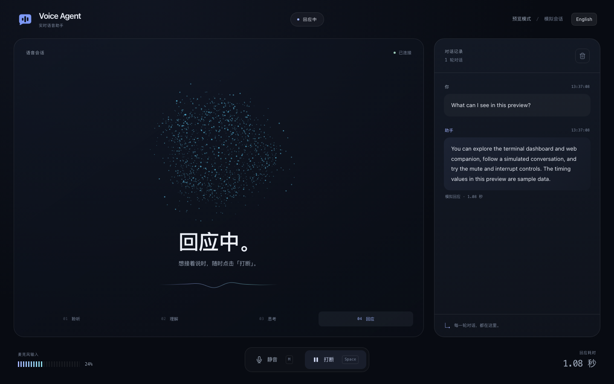

一场对话。
就在你的工作空间。
一款 Python 语音助手，配备实时终端面板和浏览器界面。从麦克风输入到语音回应，随时查看每一轮对话的进展。


识别说话时机。
本地 VAD 将语音与背景中的静音区分开来。
逐句播报回应。
异步处理流程将回应中的句子转成语音。
让对话自然继续。
通过终端或浏览器停止当前播报。
安装
需要 Python 3.11+ 和 uv。预览模式无需 API 密钥或麦克风，即可体验界面。
git clone https://github.com/natelindev/voice-agent.git
cd voice-agent
uv sync --locked
uv run voice-agent --demo --web实时 API 模式
为操作系统安装 PortAudio，允许启动程序的终端访问麦克风，并配置 OpenAI API 密钥。在 Ubuntu/Debian 上，通过软件包管理器安装 libportaudio2。在 macOS 上，使用下方命令。
brew install portaudio
cp .env.example .env
# Edit .env and set OPENAI_API_KEY
uv run voice-agent --web请勿公开 .env。API 模式会发送语音片段进行转写，发送文本和对话上下文生成回应，再发送回应文本合成语音。API 用量由服务提供商计费。
选择运行模式
| 模式 | 语音处理 | 回应生成 |
|---|---|---|
| API | 本地 Silero VAD；Whisper API 转写；OpenAI PCM 语音合成 | OpenAI 流式聊天补全 |
| Mac 语音 + Codex | 本地 whisper.cpp 转写；macOS say | 通过网络调用已登录的 Codex CLI |
| 预览 | 模拟音频和对话轮次 | 固定的示例对话 |
配置 OPENAI_API_KEY 后，默认使用 API 模式。未配置密钥时，CLI 默认使用 Mac 语音后端，除非指定 --demo。--local 明确选择 Mac 语音，优先级高于 --demo。
Mac 语音的准备工作
此后端需要 macOS、say、已登录的 codex 可执行程序、whisper.cpp 的 whisper-server 或 whisper-cli，以及位于下方路径的 OpenSuperWhisper 模型。它面向 Apple Silicon 设备。
~/Library/Application Support/ru.starmel.OpenSuperWhisper/whisper-models/ggml-large-v3-turbo.bin程序会先尝试连接 127.0.0.1:8178 上的 whisper 服务；如果模型存在，则尝试启动该服务，失败时回退到 whisper-cli。默认 macOS 音色为 Samantha。
uv run voice-agent --local --web说话、聆听与打断
标准输出为 TTY 时会显示终端面板。可选的浏览器界面位于 http://127.0.0.1:8000，展示处理状态、音量、对话记录和每轮指标。音频采集和播放由主机上的 Python 进程完成，而非浏览器。
| 控制方式 | 操作 |
|---|---|
| Space / 打断 | 停止助手当前的回应。 |
| M / 静音 | 切换麦克风采集状态。 |
| R / 清空 | 重置对话记录。 |
| Ctrl+C | 停止进程。 |
使用扬声器或耳机
扬声器模式会在助手播报期间及结束后的 500 毫秒回声消退期内暂停麦克风输入。回声过滤会拒绝识别到的扬声器漏音。通过扬声器播放时，请使用手动打断。
uv run voice-agent --web --headphones耳机模式允许在播报期间通过麦克风语音触发打断。请使用耳机，避免助手听到自己的声音。
理解延迟指标
每轮指标记录转写耗时、回应生成时间、首个语音片段时间和整体回应时间。实际延迟取决于硬件、网络、语音长度和后端。预览数值为模拟数据；本项目尚未确立有保证的延迟基准。
处理流程与音频规范
异步事件中心连接音频采集、VAD、转写、生成、播放和两个界面。音频回调在 sounddevice 的线程中执行，处理流程使用 asyncio。
Microphone → Silero VAD → utterance PCM
→ ASR → user text → response sentences
→ speech synthesis → speaker playback
EventHub → terminal dashboard + WebSocket companion| 阶段 | 当前 API 实现 |
|---|---|
| 采集 / VAD | 16 kHz 单声道 float32 输入，每块 512 个采样点；语音片段为 int16 PCM。 |
| 转写 | 使用 whisper-1 处理语音片段。 |
| 生成 | 使用 gpt-4o-mini，支持流式聊天和句子拆分。 |
| 语音合成 | 使用 gpt-4o-mini-tts、coral 音色和流式 PCM。 |
| 打断 | 发出取消信号并停止播放，以协作方式取消正在进行的工作。 |
模型、采样格式、本地服务地址和 Mac 音色目前在源代码中定义，不能通过环境变量切换。本地 Codex 后端会等待命令输出，再将回应拆分成句子。
命令行
| 选项 | 行为 |
|---|---|
--web / -w | 启动本地 HTTP 和 WebSocket 浏览器界面。 |
--port / -p | 浏览器界面端口，默认为 8000。 |
--no-open | 启动浏览器界面，但不自动打开浏览器。 |
--headless / --no-tui | 关闭终端面板。 |
--local / -l | 选择 Mac 语音 + Codex 后端。 |
--demo | 使用模拟预览；设置 --local 时会忽略此选项。 |
--headphones | 允许在助手播报期间通过语音打断。 |
--verbose / -v | 启用调试日志。 |
--help | 显示命令行帮助。 |
uv run voice-agent --demo --web --no-open --port 8010
uv run voice-agent --web --headless
uv run voice-agent --help浏览器界面绑定到 127.0.0.1，没有内置身份验证，面向本地使用。调试日志可能包含对话文本，分享前请进行脱敏。
故障排查
预览正常，但实时模式无法运行
检查 PortAudio、麦克风权限、输入和输出设备，以及所选后端的准备要求。预览模式会绕过麦克风、转写和语音合成。
程序意外选择了 Mac 模式
未配置 API 密钥时，默认选择 Mac 后端。在环境变量或项目的 .env 中设置 OPENAI_API_KEY，或使用 --demo 进入预览。
本地转写没有内容
检查预期的模型路径、whisper.cpp 可执行程序，以及端口 8178 是否提供兼容的推理接口。缺少工具或模型文件会导致本地实时语音识别不可用。
助手听到了自己的声音
使用默认扬声器模式并手动打断，或在启用 --headphones 前戴上耳机。
浏览器显示未连接
保持 Python 进程运行，检查配置的端口，并刷新浏览器界面。浏览器依赖与本地后端的 WebSocket 连接。
尚未验证音频或模型
单元测试和预览检查无法替代使用真实服务进行的麦克风到扬声器测试。在依赖延迟或打断表现之前，请在目标硬件上测量一次真实对话。
开发与贡献
测试使用模拟的服务边界，覆盖音频转换、VAD、取消、本地后端、事件、终端面板和 WebSocket 行为。
uv sync --locked
uv run pytest tests/ -q
uv build
uv run voice-agent --demo --web --no-open请参阅贡献指南。修改处理流程时，请保持采样率规范和协作取消机制。